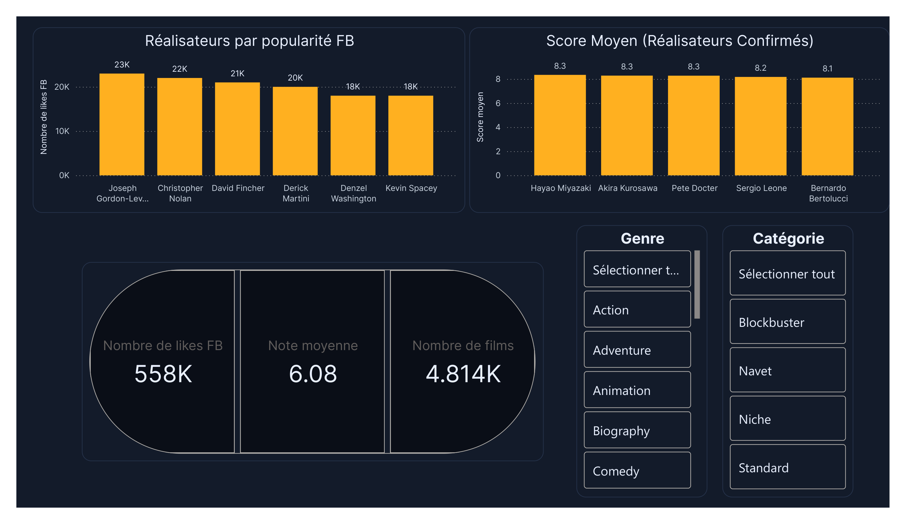
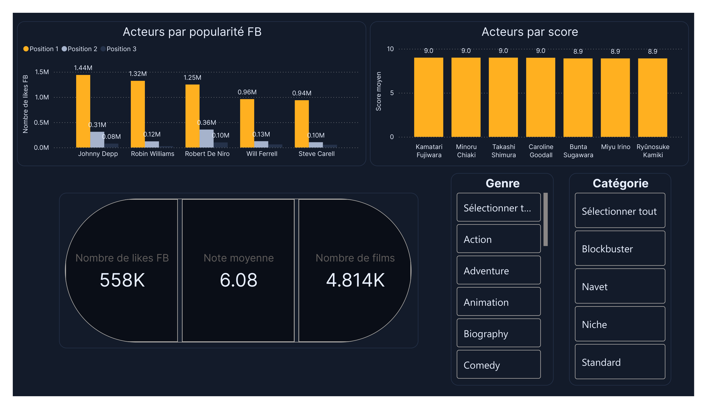
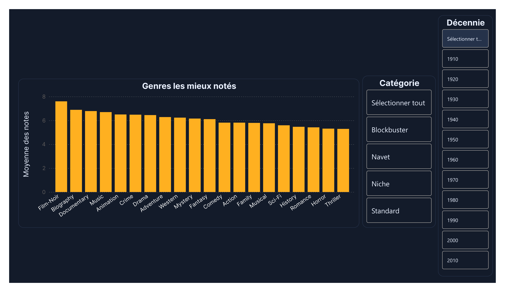
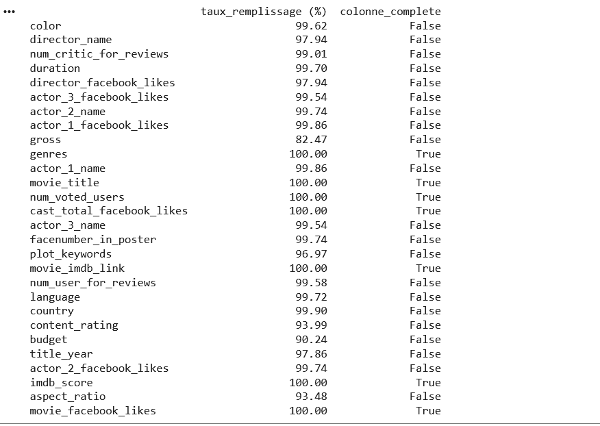
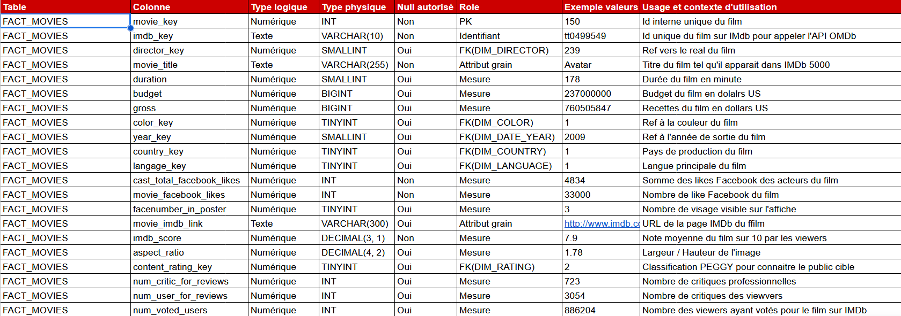
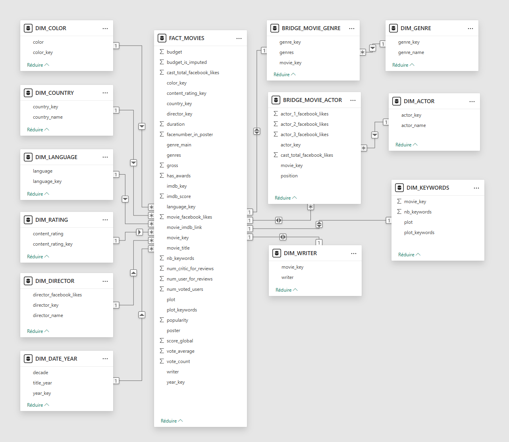

WildFlix - app web de recommandation de films
Le brief demandait un site Streamlit avec machine learning, authentification, un dashboard Power BI et un dashboard Python. La version livrée couvre ces deux faces : côté user, recherche, fiche film, favoris et recommandations ; côté admin, filtres utilisateurs, KPI, intégration Power BI et choix du modèle ML.
Important : à lire
Compte admin de test
Sécurité : ce login public n'existe que pour la démonstration. Le compte est limité à un environnement de test isolé, sans données sensibles ni accès à une base de production. Dans un cadre réel, je passe par des secrets hors dépôt, des mots de passe hashés et des accès non exposés publiquement.
Login : admin@wildflix.com
Mot de passe : admin.123
Démonstration : l'hébergement de données étant payant et l'essai Railway terminé, cette version tourne avec une base persistante hébergée sur un dépôt privé pour le compte test.
Conséquence : la création de compte, la mémoire utilisateur globale et les agrégations sur les users enregistrés pour les dashboards ne sont donc pas actives dans cette démonstration, mais la logique applicative est bien présente.
Conseil : likez quelques films dès la connexion pour alimenter les dashboards et le modèle de recommandation.
Du brief au livrable
Le brief imposait deux blocs clairs. D'abord un produit user-facing : un site Streamlit capable de recommander des films dans un contexte de cold start, avec recherche, affiches, navigation et compte utilisateur. Ensuite une couche admin / BI : un dashboard Power BI, un dashboard Python, et assez de données propres pour piloter le catalogue.
Nous avons répondu à ce brief avec une vraie chaîne produit + data : nettoyage sous Pandas, enrichissement via OMDb et TMDb, modélisation analytique, puis intégration dans une application Streamlit complète, connectée à un espace admin et à un moteur de recommandation en machine learning.
Produit livré
- Côté user : site Streamlit avec accueil éditorial, recherche tolérante aux fautes, fiche film, favoris, profil, authentification et recommandations.
- Côté admin : filtres utilisateurs, top films likés, dashboard Python, intégration Power BI et sélection du modèle KNN utilisé par l'app.
- Côté data : pipeline Pandas, nettoyage des doublons, complétion par API, schéma en étoile, dictionnaire de données et KPI exploitables.
- Côté machine learning : recommandation content-based avec plusieurs modèles
KNNet fallback si le moteur ML n'est pas disponible.







Parcours produit et gestion du cold start
Le dataset source ne contient pas d'historique utilisateur. Nous avons donc construit une entrée éditoriale pour gérer le cold start dès la première visite.
Catégories de l'accueil
- Blockbuster : score > 8 et déciles de votes 9 à 10.
- Pépite : score > 8 et déciles de votes 3 à 7.
- Niche : score > 7 et déciles de votes 1 à 2.
- Navet : score < 4.
Sur l'accueil, les cartes changent au fil des actualisations mais toujours dans un pool filtré sur la qualité. Le moteur de recherche accepte aussi une tolérance aux fautes de frappe, avec par exemple Spidelmen compris comme Spiderman, puis l'affichage des films marqués Spiderman ou de ce qui s'en rapproche.
La fiche film regroupe affiche, métadonnées, synopsis, films similaires et un rail Plus dans ce genre. La page Par genre vise environ 30 films par genre et privilégie la qualité à la quantité : elle commence sur les blockbusters et pépites, puis relâche le seuil si nécessaire, sans descendre sous une note de 6 dans le rendu final du parcours.
Pipeline data et modélisation
Le dataset final utilisé par l'app contient 4 916 films et 42 colonnes. Il vient du choix d'un MVP à partir de IMDb 5000 Movie Dataset : une seule table, assez de matière pour travailler la recommandation, mais aussi des trous de données et des biais assumés.
Nos explorations ont pointé clairement les limites du jeu de données : pas de données utilisateur natives, base figée, surreprésentation des films populaires et colonnes incomplètes. Cela justifie le choix d'un système content-based.
Chronologie réelle du projet
- 1. Analyse approfondie : étude du besoin métier, exploration
Pandas/Seaborn, dictionnaire de données, choix du grain1 ligne = 1 film, schéma en étoile cible et arbitrage cold start / content-based. - 2. Nettoyage et enrichissement : suppression des doublons, audit des taux de remplissage, automatisation des requêtes
OMDb/TMDbavec cache, fusions, colonnes dérivées et imputations. - 3. Chantiers parallèles : application
Streamlit, authentification, modèles de recommandationKNN, dashboard Python intégré et reportingPower BI.
Travail de préparation de données
- Suppression des doublons complets et des doublons métier sur
movie_title/title_year/movie_imdb_link, puis normalisation demovie_imdb_linkenimdb_key. - Mise en place d'un script d'automatisation avec
omdb_cache.csvettmdb_cache.csvpour ne rappeler que les identifiants absents, gérer les erreurs d'API et sauvegarder l'avancement par batch. - Complétion des colonnes manquantes via merge API :
duration,language,country,content_rating,budget,title_year, mais aussiPlot,Poster,Metascore,vote_average,vote_countetpopularity. - Politique de qualité à 95 % de remplissage : suppression de
aspect_ratio, abandon degrossaprès analyse de sa redondance, conservation debudgetpour le ML, puis imputation par médiane groupée surgenre_main,decadeetcountry_main. - Traitement spécifique de
plot_keywords: si la colonne était vide, les mots-clés étaient reconstruits à partir duPlot/overviewvia embeddingsSentenceTransformer, sélection de candidats, puis fusion finale dansplot_keywords_final. - Construction d'un schéma en étoile et d'un dictionnaire de données pour alimenter les dashboards et structurer la suite du projet.
Le modèle analytique s'organise autour de FACT_MOVIES et de tables de dimensions / bridge pour les genres, acteurs, réalisateurs, mots-clés, pays, langue ou année. Il facilite la lecture BI et les futurs calculs de KPI.
Une fois cette base stabilisée, trois travaux avancent en parallèle : l'application Streamlit et son parcours utilisateur, les modèles de recommandation machine learning, puis les dashboards Python et Power BI branchés sur le même socle de données nettoyées.
Moteur de recommandation
La recommandation combine deux familles de features. La partie textuelle agrège genres,
plot_keywords_final, writers, acteurs et réalisateurs dans une colonne
soup, puis l'encode avec CountVectorizer. La partie numérique normalise des
colonnes comme imdb_score, num_voted_users, vote_average,
vote_count, gross ou score_global via
MinMaxScaler.
Les deux représentations sont fusionnées avant recherche de voisins proches. Nous avons aussi testé du clustering, mais la version produit retient NearestNeighbors / KNN, jugé plus lisible et plus contrôlable pour un usage cinéma.
Décisions techniques
- Trois modèles sont fournis :
KNN_cosine.pkl,KNN_euclidean.pkletKNN_manhattan.pkl. - L'admin peut choisir le modèle global utilisé par l'app.
- En cas d'indisponibilité ML, un fallback cosinus plus léger reste actif sur les mots-clés, le genre principal et la langue.
- Les recommandations sont dédupliquées par
imdb_keyet limitées par franchise pour éviter les listes monotones.
Pilotage admin et KPI
Le compte admin permet de segmenter la lecture des favoris et des KPI selon quatre filtres utilisateurs prévus dans les profils : âge, genre, résidence dans la Creuse et fréquentation cinéma sur 12 mois.
Familles de KPI retenues
- Films les plus likés sur le site.
- Popularité des réalisateurs.
- Popularité des acteurs.
- Genre et décennie.
- Durée.
- Classification d'âge / content rating.
Nous ne cherchons pas « les meilleurs films » au sens absolu, mais les bons films pour les bonnes personnes, au bon moment. C'est ce qui relie les KPI, la segmentation utilisateur et les décisions de programmation.
Nous avons deux couches de restitution : un dashboard Python intégré directement dans l'app pour l'analyse rapide, et une couche Power BI pour le reporting. Le dashboard Python est le plus connecté au produit lui-même : il réutilise les comptes, les filtres profils et les favoris du site, puis fusionne ces signaux avec les métadonnées films pour produire des KPI comme les préférences par genre ou par langue. Power BI reprend les mêmes grandes familles d'indicateurs sur le modèle analytique, dans une logique plus BI.
Stack et exploitation
Nous avons retenu Streamlit comme choix MVP pour aller vite et livrer une application exploitable de bout en bout. Nous avons fait tourner l'application avec un stockage JSON local en développement, puis une cible MySQL en production. Le déploiement a été pensé avec Railway, et l'admin dispose de scripts pour créer un compte, réinitialiser un mot de passe ou migrer les utilisateurs du local vers MySQL.